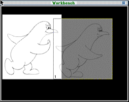
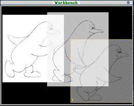

3DO PostPro allows you to display multiple cels on top of an image on the
Workbench and television monitor simultaneously and layer them. Each cel
or image has a number. The topmost cel in the layering display shows its
number in the lower-left corner. You can reorder the layering sequence
interactively.
This section shows you how to display more than one cel at a time and
reorder the layering sequence.
Launch 3DO PostPro.
Open the files you want to display. The Document windows appear.
Drag the Document Proxy for the first cel onto the Workbench. Then
drag the Document Proxy for another cel onto the Workbench.
Figure 1 shows two cels displayed with the topmost cel showing its
sequence number in the lower left corner of the cel.
Note: The cels are numbered in the order you drag them onto the
Workbench. The cel with the number shown is the cel on the top of the
layering sequence.

Figure 1: Two cels displayed simultaneously.
Repeat Step 3 until all cels are displayed. Figure 2 shows three cels displayed at once.

Figure 2: Three cels displayed simultaneously.
To change the order of the layering, click on the cel you want to
reorder in the stack. Then, select Move Forward or Move Back from the
Workbench menu.
To remove a cel from the display, select Remove Item from the
Workbench window.